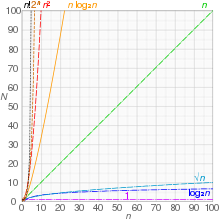
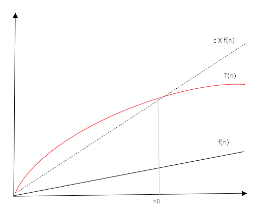
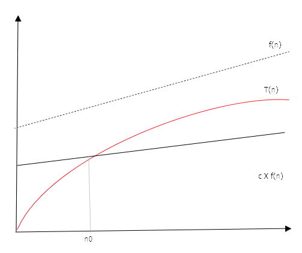

В асимптотическом анализе алгоритмов принято использовать базовые обозначения, позволяющие формализовать сложность алгоритма. Все термины сводятся к устранению постоянных коэффициентов, так как они слишком зависимы от аппаратной и программной реализации, а так же к игнорированию членов низших порядков, так как с ростом объема данных такие вычисления перестают играть значимую роль.
O-большое
Для функции, зависящей от длины входных данных утверждается:
тогда и только тогда, когда существуют положительные константы и , такие что справедливо неравенство для всех . Иными словами, ограничена сверху функцией, кратной функции

Важно: и не зависят от
-большое
имеет тот же смысл, что и , только функция, кратная ограничивает снизу. Таким образом, две нотации реализуют наихудший и наилучший случаи. тогда и только тогда, когда существуют положительные константы и , такие что справедливо неравенство для всех .

-большое
тогда и только тогда, когда существуют положительные константы , и , такие что справедливо неравенство для всех
o, , -малые
Малые нотации соответствуют большим, но при условии строго неравенества.
Также читайте про временную сложность в машинном обуче6нии и про базовые принципы временной сложности